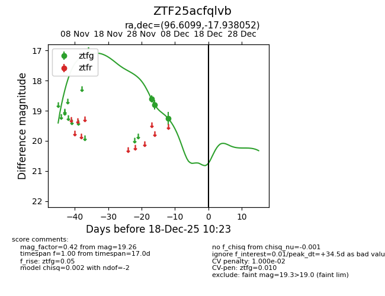
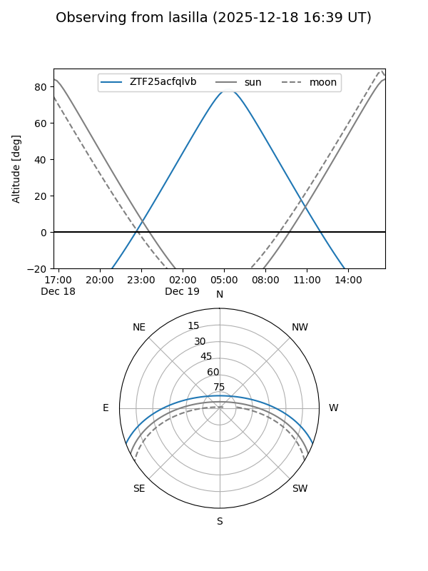
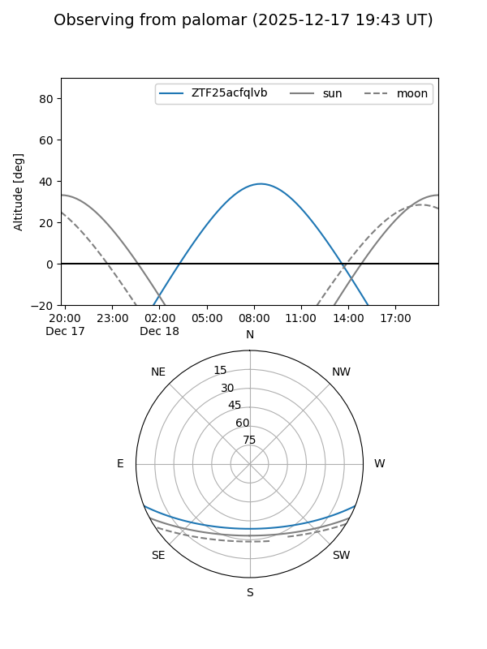

ZTF25acfqlvb
Target ZTF25acfqlvb at 2025-12-18 11:17
Aliases and brokers:
FINK: fink-portal.org/ZTF25acfqlvb
Lasair: lasair-ztf.lsst.ac.uk/objects/ZTF25acfqlvb
ALeRCE: alerce.online/object/ZTF25acfqlvb
alt names
ZTF25acfqlvb (ztf,fink_ztf)
Coordinates:
equatorial (ra, dec) = 96.6099,-17.93805
equatorial (HMS+DMS) = 06:26:26.37,-17:56:16.99
galactic (l, b) = (226.4222,-13.45091)
Photometry
last ztfg=19.26
3 ztfg detections
Lightcurve

Visibility


Additional plots